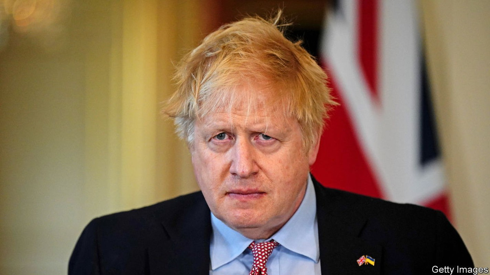

The Conservative Party will not be able to move on, whatever the prime minister hopes

BORIS Johnson survives as Britain’s prime minister, by an uncomfortably narrow margin. In a confidence ballot conducted on June 6th, Conservative MPs voted by 211 to 148 for him to remain their party’s leader. That winning share—59%—is smaller than the margin of 63% that Theresa May secured in December 2018 as her premiership floundered. A little under six months later, she quit.
Mr Johnson declared his victory decisive, and showed no flicker of self-reflection or contrition. “We have a conclusion to something that’s been dragging on for far too long,” he said afterwards. In truth, the scale of insurrection has surprised Mr Johnson’s circle. Far from moving on, the result is paralysing. It leaves the prime minister badly wounded, with rivals jockeying to replace him, and a party at risk of civil war over its ideological direction.
The ballot was triggered after 54 Conservative MPs wrote to Sir Graham Brady, a Tory grandee, to say that they lacked confidence in Mr Johnson’s leadership. That passed a threshold specified in the party’s rules. Sir Graham publicly broke the news of the vote at dawn on June 6th, prompting a day of lobbying by Mr Johnson. He reminded MPs of his proudest boasts—delivering Brexit, overseeing a covid-19 vaccine programme, aiding the Ukrainian fight—and dangled airy promises of lower taxes, deregulation and more government spending. Addressing them later in the afternoon, he assured them he could still win the next election, a feat that would produce an unprecedented fifth consecutive term in government.
Those efforts yielded a paltry return. The result is an especially underwhelming one given that Mr Johnson overhauled his inner sanctum in Downing Street just a few months ago in a bid to reboot his premiership. MPs remarked on a haphazard whipping operation, with waverers going uncontacted. Just 169 MPs felt able to declare publicly their support for Mr Johnson, according to a tally by Reuters. Throughout the day, high-profile figures announced they had withdrawn their support for him. Among them were Jeremy Hunt, a former foreign secretary who once ran to lead the party; Douglas Ross, the leader of the party in Scotland; and Dehenna Davison, a 28-year-old MP who has become a flag-carrier for a new, northern generation of Tory MPs.
The wounding by his own party is the more remarkable given it is just two and a half years since Mr Johnson’s triumph in the general election in 2019, which granted him a working majority of 87, the largest since Margaret Thatcher’s third victory in 1987. With that power he started to remake British politics: wrenching the country out of the EU and imposing a new brand of big-state conservatism marked by high spending and hostility to checks on executive power. Only last year, after the Tories had won a by-election in Hartlepool, a poor northern port town that had voted Labour for generations, Mr Johnson dared speak of a decade in office. How did it fall apart so fast?
In part because Mr Johnson’s premiership was built on weak foundations. Unlike Mrs May, a lifelong servant of the party, he was elevated to the leadership as the last-ditch solution to a desperate situation. Entrenched in a bitter civil war over Brexit, unable to deliver a deal in Parliament, the Conservative Party was at risk of breaking in two and being swept away by Jeremy Corbyn’s Labour Party on the left and Nigel Farage’s Brexit party on the radical right. Many MPs loathed Mr Johnson as a liar and a lightweight but backed him all the same, realising there was no alternative to his simple pitch: “Deliver Brexit, Unite the Party, Defeat Corbyn.”
His election victory was also due to an exhausted electorate, desperate to end the Brexit deadlock and to keep Mr Corbyn from power. He found pockets of genuine enthusiasm in the country. But in reality his appeal was limited: on taking office he had the lowest initial approval ratings of any prime minister since 1979 (see chart). He was less popular in the 2019 campaign than either Mr Corbyn or Mrs May had been in 2017, according to Will Jennings of the University of Southampton.
Nonetheless, his general election victory fed a remarkable hubris in Mr Johnson’s circle. They came to believe their own propaganda: that Mr Johnson had an unbeatable popularity among small-town voters, who could be energised by culture wars and were indifferent to questions of standards and norms about which Mr Johnson’s rivals, now scattered to the backbenches, constantly carped.
Such hubris was visible in the scenes described by Sue Gray, a civil servant who investigated breaches of covid-era rules at Downing Street and whose report helped bring Mr Johnson to this pass. As Britons endured long lockdowns, boozy and raucous parties repeatedly happened throughout the Downing Street complex, in defiance of both the law and common decency. Even after Ms Gray’s report, and a fine from the Metropolitan Police for breaking the law, Mr Johnson showed little repentance, accusing his critics of a “sanctimonious obsession”. Even now, his allies brush off the affair (“Is there anyone here who hasn’t got pissed in their lives?” one told reporters, as MPs mustered to vote). Even now, they insist he has a magic touch (“We know Boris can be light-hearted, which is why he is so popular in the country,” declared James Cleverly, a foreign-office minister).
After hubris, nemesis. Mr Johnson’s personal ratings have collapsed: his net approval rating stands at net -42. Among Tory party members, Mr Johnson is now the least popular member of the cabinet, according to a survey of the rank and file by Conservative Home, a website (see chart). A separate poll of Conservative members, conducted by YouGov on June 6th as Tory MPs were preparing to vote, found 42% wanted him gone. Many Tory MPs fear an electoral wipeout: another survey by YouGov concluded that the Tories would lose 85 out of 88 battleground seats were an election to be held tomorrow, more than enough to see the party ejected from power.
The prospect of defeat has prompted moderate backbenchers to find their voice. Jesse Norman, a former Treasury minister, denounced the entirety of Mr Johnson’s policy agenda in a letter calling for his resignation, dismissing everything from a proposed scheme of deportations of irregular migrants to Rwanda (“ugly”) to a bid to rewrite the Brexit deal (“politically foolhardy”). Mr Johnson, he said, is trying to “import elements of a presidential system of government that is entirely foreign to our constitution and law”. Nadine Dorries, the culture secretary and one of Mr Johnson’s closest supporters, appeared to confirm this charge when she declared before the vote that MPs could not “overrule” the electorate which had chosen Mr Johnson. (That is a garbling of Britain’s constitution, under which the prime minister has no personal electoral mandate but is sustained by the confidence of MPs alone.)
The vote won, there is no mechanism for forcing him out soon: under current party rules, there cannot be another vote of confidence in Mr Johnson for another 12 months. But rules can be changed, and rougher times lie ahead. By-elections are to be held on June 23rd in Tiverton and Honiton, in south-west England, and Wakefield, in Yorkshire. The two constituencies are currently held by the Conservative Party; it is widely expected to lose both. MPs on the Privileges Committee of the House of Commons, meanwhile, are still to investigate whether Mr Johnson lied to Parliament over Partygate.
All the while, the informal leadership contest that has been under way for months will heighten. It is likely to produce a wide field, with no clear front-runner. Contenders include Liz Truss, the foreign secretary; Nadhim Zahawi, the education secretary; and Penny Mordaunt, a trade minister out of favour with Mr Johnson.
A civil war looms, with its prize not only Downing Street but the future of the party. The leadership ballot has polarised the party between those who think Johnsonism an aberration, with its unhealthily lavish spending, disdain for Britain’s allies and coarse populism, and those who think it is still the wave of the future. And in the middle there is a mass of MPs, instinctively loyal to their leader, averse to conflict and craving party unity. That has gone up in smoke. ■